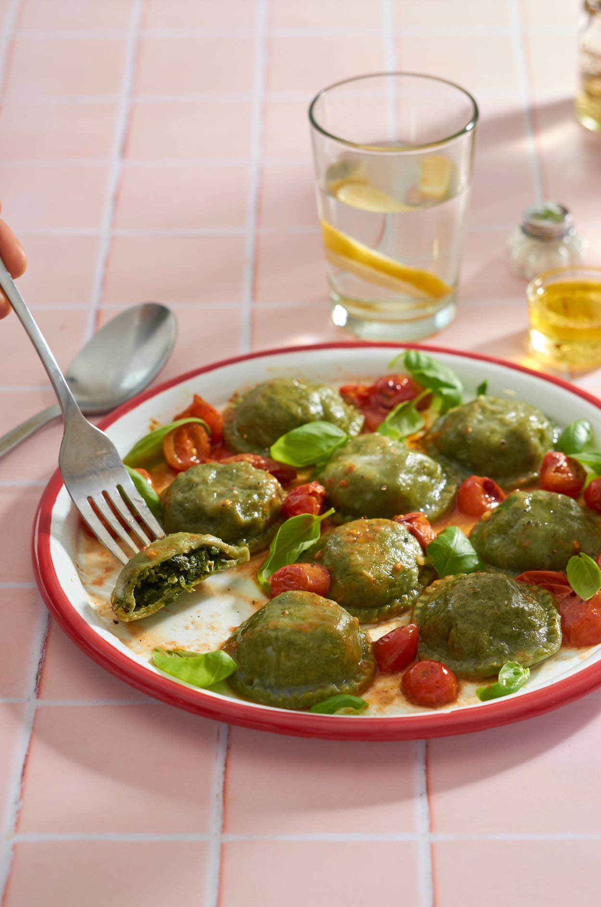
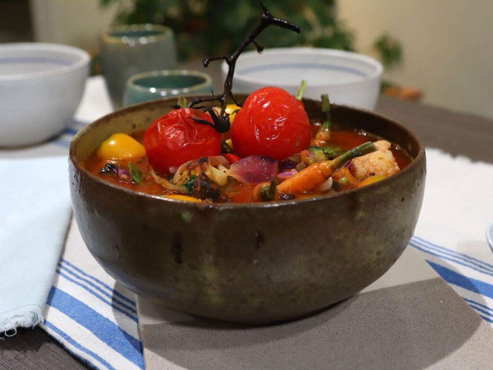

Carnes
Proteinas de Primera Calidad
01.
Lomo magro al horno
Guarnición:Verduras al vapor
Esta receta, tan rica, no solo nos aporta proteinas de buena calidad, sino que además da saciedad. Que significa? Que permite que te sientas lleno por un largo rato y te alejes del famoso "picoteo"

Pastas
Hidratos de Carbono Complejos

02.
Sorrentinos
Siempre acompañados de vegetales
Pastas en una dieta? Si, pastas! APortan hidratos complejos y si las acompañamos con vegetales aumentamos el consumo de fibra pero lo más interesante, quien no ama las pastas con este frío?
Vegetales
De todos los colores
03.
Sopa de Tomates
Guarnición:Verduras al vapor
En invierno tomamos muy poco lìquido, recetas como estas nos permiten optimizar nuestra hidratacióna travez de líquidos y minerales y vitaminas de los vegetales. Es rápida, fàcil y rica. Una receta tìpica para cuando te portaste un poco mal y tenes que hacer detox.
